長野に
地蔵を赤く塗るという風習があると聞きつけて見に行ってみた。
事前のリサーチでは善光寺周辺に数多く存在するものの、長野市を中心にかなりの広範囲にあるようだ。
今回、3部構成にてお届けする。
つまり長いっつーことだよ…
長野の駅前で早速朝そばを引っ掛けてからのレッツ赤地蔵。
最初に訪れたのは長野駅からもほど近い
栽松院。
曹洞宗の寺だ。
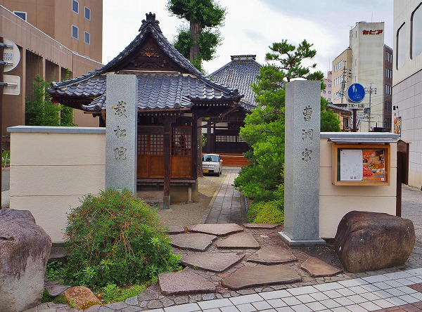
善光寺への参道沿いにあり、周囲は飲食店や商店が並ぶ繁華街だ。
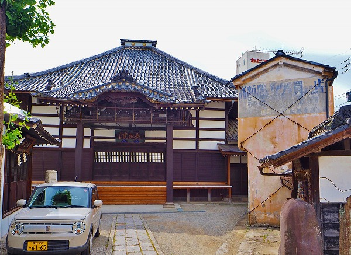
境内はさほど広くない。
本堂の手前に地蔵堂がある。
額には
子育地蔵尊とある。
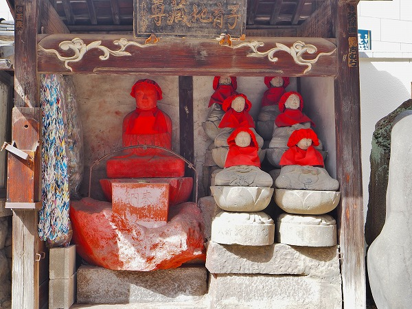
真っ赤に塗られたお地蔵さんがおわす。
部分的に塗る、とかのレベルではなく、台座も含めて全部、バッチリ、キッチリ塗り籠められている。
このインパクトは凄いな。
私が知る限り石仏を赤く塗る例は当サイトの姉妹サイトでもある
日本すきま漫遊記で報告されている
愛知県西尾市の赤地蔵と埼玉県北部に点在する赤庚申くらいのものである。
他には
京都の化粧地蔵や
青森の化粧地蔵、
富山の化粧地蔵、後は
鹿児島の田の神さあくらいではなかろうか。
いずれにせよ
赤一色で地蔵を塗りまくるという習俗が広範囲で行われているというケースは少なくとも私は聞いたことが無い。
しかも長野の仏教信仰の中心地である善光寺の周辺にそのような濃密な習俗が存在しているとは由々しき問題ではないか。
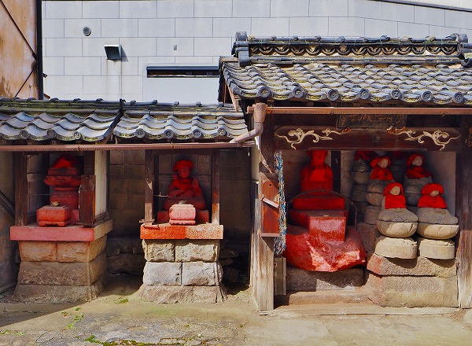
地蔵堂の隣にも赤い石仏が。
赤い前掛けがしてあったがいずれも地蔵尊ではない模様。
どちらかというと
巻き添えをくらった恰好と思われる。
ちなみに赤地蔵の右側にある六地蔵には彩色が成されていない。
この辺の
塗る/塗らないの違いは何なのか？
そもそも何の為に地蔵を赤く塗るのか？
その辺の疑問を抱きつつ長野の赤地蔵めぐりの旅が始まりますよ。
もう一度言うけど今回は長いからね。
長野駅からスタートし、善光寺に向かって歩く。
次に訪れたのは参道をやや外れた
鳴子大神。
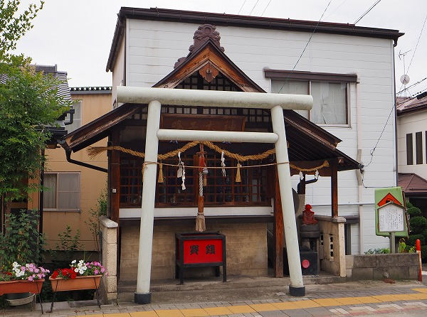
住宅街の中にある小さな祠の隣にお地蔵さんがいらっしゃる。
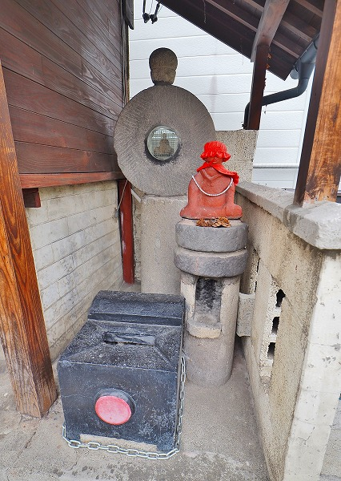
小さなお堂だがここのお地蔵さんもまた
キッチリ赤く塗られていた。
後の丸いドーナツ状の石の中には剣を持った仏像が祀られていた。
更に善光寺を目指す。
お次は
西方寺、浄土宗の寺院である。
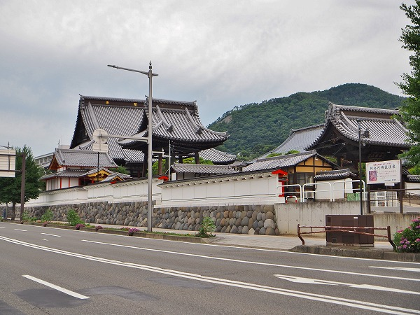
御覧の通り大変立派な寺院である。
善光寺とも縁が深く、この近辺では
善光寺の次に立派な寺院なのではなかろうか。
かつては長野県庁の仮庁舎もあったという。
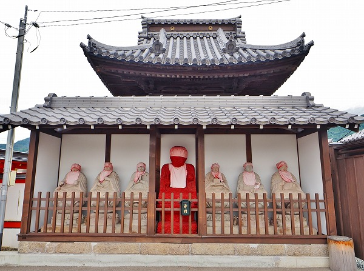
門前に早速いらしゃいました。
赤地蔵様。
左右に六地蔵を従えて中央で赤く輝いております。
先程の栽松院もそうだったが、
赤地蔵と六地蔵は別物として扱われているようだ。
赤地蔵は塗ってよし。六地蔵は塗らない。という棲み分けがあるようだ。
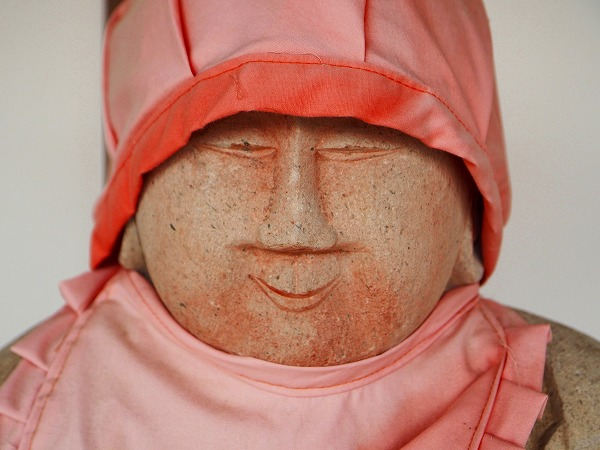
…と思ってよく見たら六地蔵の方もうっすら赤い。
かつては全部赤かったのだろうか？
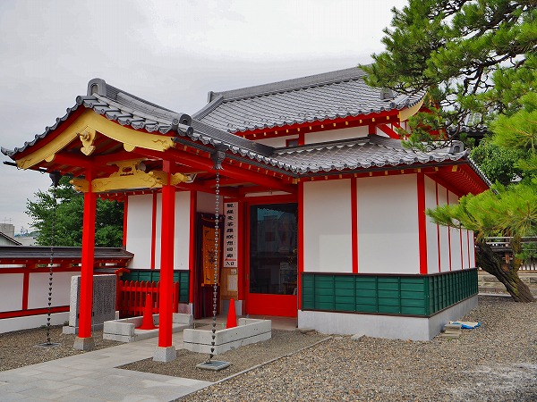
この寺院のもうひとつの見どころが
ダライ・ラマ14世により開眼されたというチベット大佛。
大佛、と聞いちゃあ行かないわけにはまいりませぬ。
ちなみに近くにの
十念寺にも出世大仏という
ビートたけしによく似た大仏さんがおわすので大仏舎弟の皆々様方はお見逃しなきよう。
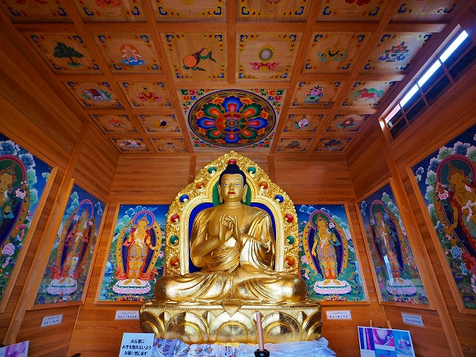
こちらがそのチベット大佛。
平成22年にダライ・ラマ14世がここに来て開眼したという、チョットあり得ないくらいありがたい大佛サマである。
つか善光寺のみならず、この寺にダライ・ラマ14世が来るって凄くないですか？
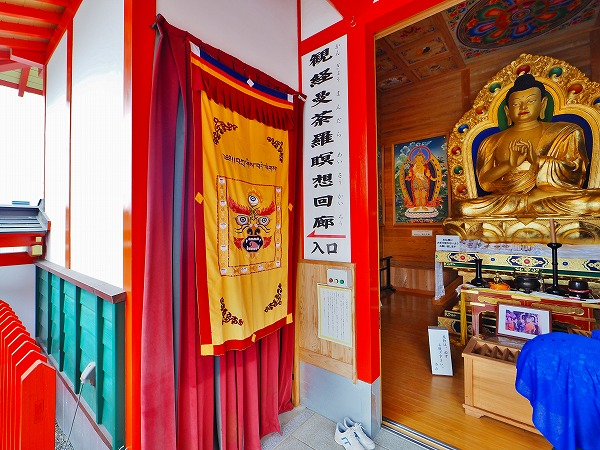
さらに気になるのが大仏殿にある
観経曼荼羅瞑想回廊というもの。
恐る恐るカーテンを潜って中に入ってみる。
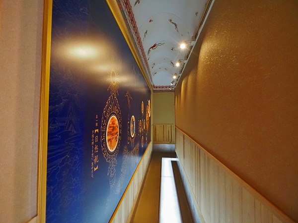
このような回廊を数々経験してきた身としてはこの距離感、という事は大仏さんの裏側に行くんだろうなあ、という事はこの時点で何となく判った。
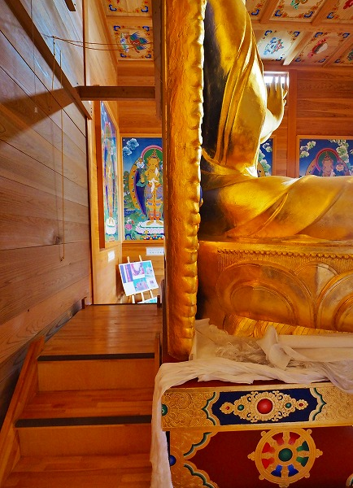
やっぱし。
大仏さんの背後を拝めるのですね。
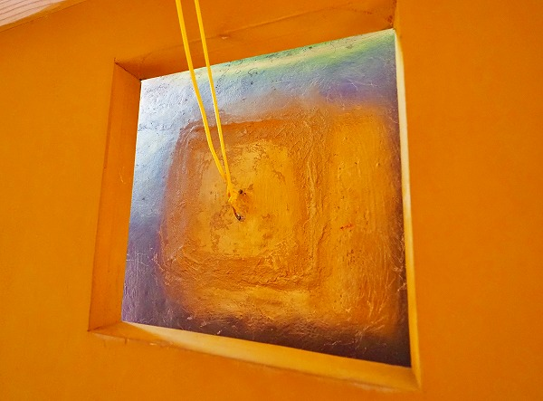
背中には何やら不思議な蓋が。
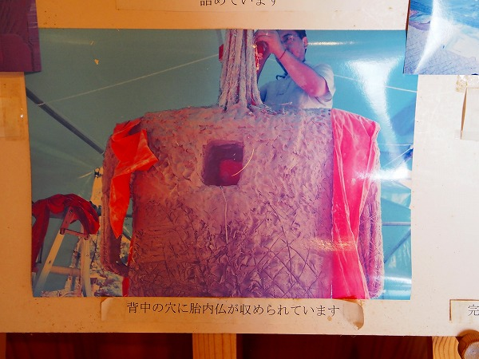
なんと胎内仏が収められているそうな。
赤地蔵を訪ねたついでに思いがけず凄い大仏に出会ってしまった。
善光寺の参道をさらに進む。
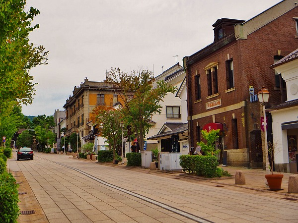
この辺りは昔ながらの洋館や蔵造りの商家なども多く、善光寺の歴史を感じられるエリアだ。
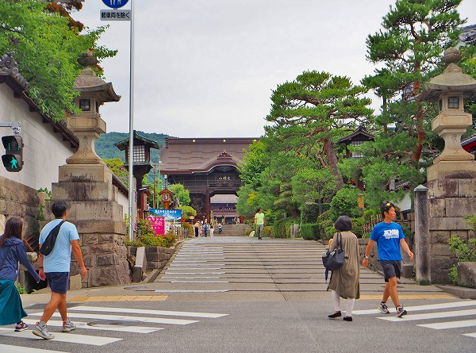
で、善光寺の山門。
今回は敢えて善光寺はスルーして山門の手前を右に曲がる。
ちなみに善光寺の境内には赤地蔵は一切ない。
赤いのは先日盗まれて大騒ぎになったおびんずるさまだけ。
この辺、
成田山の札打ち習俗によく似ている。
地域を代表する特定の寺院の周辺で起こる民間信仰現象。
しかしその中心地の境内にはその現象は起こらない。
この現象は調べたら他にもありそうなので今後の課題とし、取り敢えずそういう現象がある、という事だけを指摘させていただく。
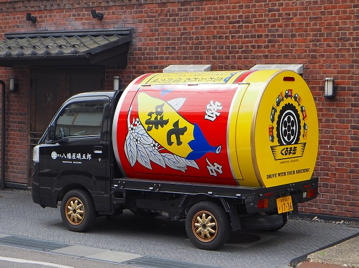
長野名物八幡屋磯五郎の七味唐辛子カー。
個人的な印象なのだが、何故か長野は個人名を冠した商店が多いような気がする。
笠原十兵衛薬局とか又三郎薬局とか。別にいいですけど。
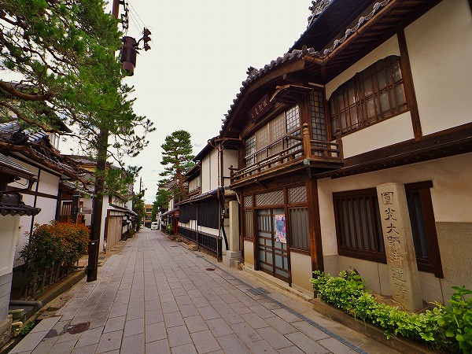
善光寺の東側は塔頭やら宿坊やらが並ぶ雰囲気の良い街並みが続く。
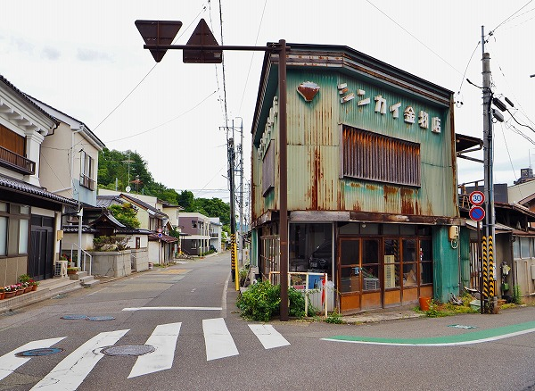
そんな街並みをウロウロしていると激渋い金物店がある。
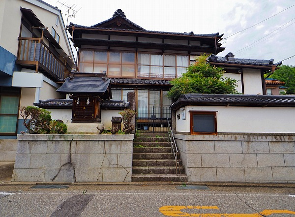
そのすぐ近くに
柏崎地蔵尊がある。
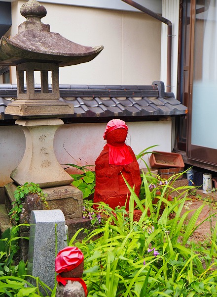
一見、民家のような造りなのだが、庭先に赤地蔵が祀られていた。
塗りたてなのだろうか、色が濃い。
さらに北上する。
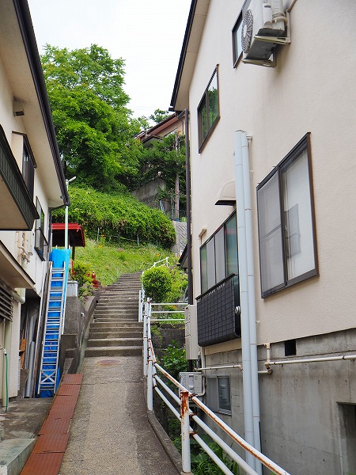
新町の赤地蔵。
場所的には長野電鉄（車両が旧日比谷線と旧小田急ロマンスカー！）の善光寺下駅の近く。
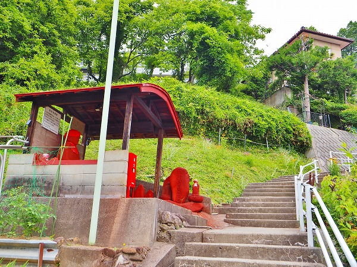
住宅街の坂道を登っていくと見えてくる。
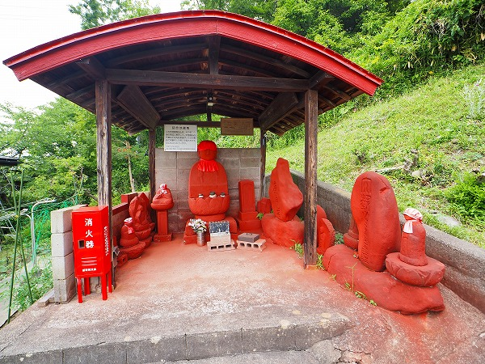
石仏から石碑まで
全部真っ赤っかに塗られている。
真ん中にあるお地蔵さんのみならず庚申様や如意輪観音まで真っ赤に塗られまくっている。
まさに巻き添えをくらった、としか言いようがない。
説明板によるとこの近辺に点在していた石仏を集めて合祀したらしい。
左の消火器のケースも屋根も赤くて妙な一体感がありました。
取り合えず善光寺周辺はこんな感じです。
続いて長野市郊外編をお楽しみくださいませ。